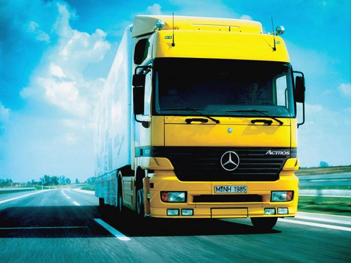

Мы каждый день совершенствуем процесс доставки грузов и создаём выгодные условия сотрудничества для десятков клиентов по всей стране
Прайд Индастри организует международные перевозки грузов для юридических лиц и индивидуальных предпринимателей автомобильным транспортом от 1м3 до 120м3. Накопленный опыт позволяет осуществлять доставку таких типов грузов, как оборудование, пищевые продукты, цветы, пиломатериалы, сельскохозяйственные товары, строительные материалы, бытовую технику. Убедитесь в этом сами, став нашим партнёром!
Грузы, которые собираются от различных грузоотправителей на складе экспедитора, после этого составляются транспортным планировщиком в зависимости от направления, срочности, веса и объема называются в логистике сборными грузами.
Комплектная перевозка заключается в доставке груза отдельным автомобилем или транспортным контейнером. Количество наших перевозок формата FTL превышает 2000 в год. География поставок охватывает Западную, Центральную и Восточную Европу, Беларусь, Россию, Казахстан и другие страны.
Более подробную информацию можно получить связавшись с нами по контактному номеру телефона.